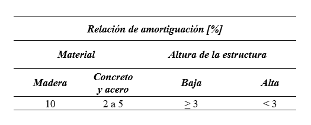

Programa
El programa solicita los siguientes datos:
- Número de pisos (Estos pueden solo pueden ser máximo 5)
- Peso específico del material de la estructura en [kN/m³]
- Altura de los pisos [m]
- Base del sección transversal de las columnas en [m]
- Altura del sección transversal de las columnas en [m]
- Base del sección transversal de las vigas de los pisos en [m]
- Altura del sección transversal de las vigas en [m]
- Longitud de las vigas [m]
- Módulo de elasticidad [GPa]
- Porcentaje de amortiguación [%]
Los datos que se van a obtener después de haber ingresado los datos solicitados son:
- Matriz de masa [kg]
- Matriz de rigidez [N/m]
- Frecuencias naturales [rad/s]
- Ciclos por segundo [cps]
- Periodos naturales [s]
- Matriz de modos de vibración
- Ortogonalidad
- Matriz de amortiguamiento
- Factor de participación
- Participación de la masa en cada modo [%]
- Pseudoaceleración [m/s2]
- Matriz o vector de aceleración [m/s2]
- Fuerza total [kN]
- Desplazamientos espectrales [mm]
- Desplazamientos de cada piso [mm]
- Espectro sísmico de diseño de la ciudad de Pasto
- Simulación del pórtico simple
A continuación, se indica una tabla donde se encuentran algunas relaciones de amortiguamiento por si el usuario desconoce este dato, el cual depende del tipo de material y altura que tenga la estructura (American Society of Civil Engineers, 2017).

Sofía Liliana Getial Rivera - Kevin Alejandro Pantoja Zambrano / Universidad Mariana 2021